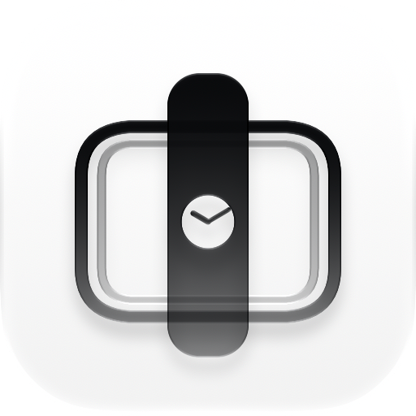

Last One, I Promise
Every Watch. Every Wear.
Support
Last One, I Promise is an iPhone app for watch collectors. Catalog your collection, log which watch you wear each day, track accuracy and service history, and see how your watches fit into your daily activity.
Contact us
Found a bug, have a question or want to suggest a feature? Email us at lastoneipromise.app@proton.me. We read every message and usually reply within a few business days.
The easiest way to write to us is from the App: Settings ▸ Contact Support opens an email that already includes your app version, iOS version and iPhone model. If you email us another way, please include those details and the steps that lead to the problem.
Frequently asked questions
Do I need an account?
No. The app has no sign-up and no login. Your data lives only on your device, and in any backup files you choose to export.
Does the app sync between devices?
No. To keep your Apple Health information off the cloud, the app stores everything on the device you use it on. To move your collection to another iPhone or iPad, export a backup with Settings ▸ Local Backup & Restore and restore it on the other device.
How do I back up or move my data?
Go to Settings ▸ Local Backup & Restore in the app to save a backup file of your entire collection to the Files app. You can restore it later on the same or another device. Restoring replaces all data currently in the app.
Why does the app ask for Health access?
Health access is optional. When granted, the app reads steps, workouts, walking and running distance, cycling distance and flights climbed so it can show activity insights next to the watch you wore that day. The app never writes to the Health app. You can change access at any time in the iOS Settings app ▸ Privacy & Security ▸ Health.
Why does the app ask for my location?
Location is optional. It is used to show local weather and to record the city and country where you wore a watch, for your reports. Only the city and country name are saved, never your exact coordinates.
Which features are free and which need Premium?
Core cataloging and wear logging are free. Premium unlocks unlimited watches and the advanced insights, accuracy and service features. The full, current list is shown in the app on the Premium screen.
How do I restore a purchase?
Open the Premium screen in the app (or Settings ▸ Premium Features) and tap Restore Purchases. Make sure you are signed in with the same Apple Account you used to buy Premium.
How do I cancel my subscription or request a refund?
Subscriptions are managed by Apple. Open the iOS Settings app, tap your name, then Subscriptions, and choose Last One, I Promise. Refunds are handled by Apple at reportaproblem.apple.com.
Where does the watch information come from?
The app includes a built-in database of real watch models to help you fill in specifications. It is provided for convenience and may contain mistakes. You can always edit any detail of your own watches. See Settings ▸ Legal ▸ Real Watches Data Disclaimer in the app.
How do I delete my data?
See Delete your data for step-by-step instructions.